Cursor
Padrão no login, seleção de personagem e mundo.
- Modo
- Software · sprite OpenGL
- Hotspot
- (2, 2) na área desenhada de 24 × 24
- Origem
Data/Interface/Cursor.ozt- Textura
- 32 × 32 px
Texturas originais ampliadas 3×. Clique em uma imagem para abrir o PNG. O xadrez mostra a transparência original. Os JPGs de marcador e de placa são opacos.
Cliente antigo · C++
Cliente novo · Unity
Padrão no login, seleção de personagem e mundo.
Data/Interface/Cursor.ozt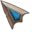
Padrão com ponteiro livre e entrada permitida.
Atlas/Native/mega-hover-r24.bundle → assets/mega-hover-r24/normal.texture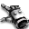
Botão esquerdo pressionado, inclusive na janela de comandos.
Data/Interface/CursorPush.ozt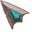
Botão esquerdo mantido e sem alvo de maior prioridade.
Atlas/Native/mega-hover-r24.bundle → assets/mega-hover-r24/clicked.texture
Alvo atacável fora da zona segura ou passagem sobre a carroça.
Data/Interface/CursorAttack.ozt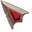
Monstro elegível fora da zona segura ou jogador elegível pela regra PvP.
Atlas/Native/mega-hover-r24.bundle → assets/mega-hover-r24/attack.texture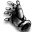
Item selecionado no chão.
Data/Interface/CursorGet.ozt
Item de chão sob o ponteiro. Prioridade sobre o cursor Mega.
StreamingAssets/OwnUI/cursor/CursorGet.png
NPC selecionado. Atlas 2 × 2 com sequência 1–2–3–4–3–2.
Data/Interface/CursorTalk.ozt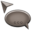
NPC, carroça e objeto operável selecionado.
Atlas/Native/mega-hover-r24.bundle → assets/mega-hover-r24/chat.texture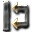
Interação de encostar em objetos específicos de Lorencia, Dungeon, Devias e Noria.
Data/Interface/CursorLeanAgainst.ozt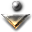
Demais objetos operáveis no ramo de pose. A mesma arte também é usada na interface de troca.
Data/Interface/CursorSitDown.ozt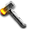
Modo de reparo do inventário ou do NPC. A arte gira ao pressionar e durante a animação.
Data/Interface/CursorRepair.OZT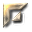
Seleção de alvo na janela de comandos.
Data/Interface/Cursorid.OZTCliente antigo · C++
Cliente novo · Unity

Textura do efeito de posição-alvo.
Data/Effect/cursorpin01.OZJ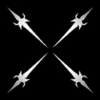
Textura do marcador de posição no TPS.
StreamingAssets/OwnTpsMarker/Textures/cursorpin01.jpg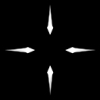
Textura do efeito de posição-alvo.
Data/Effect/cursorpin02.OZJ
Textura do marcador de posição no TPS.
StreamingAssets/OwnTpsMarker/Textures/cursorpin02.jpgCliente antigo · C++
Cliente novo · Unity
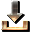
Textura encontrada nos dados do cliente, sem referência encontrada no código do ponteiro.
Data/Interface/CursorAddIn.OZT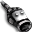
PNG presente em OwnUI. A seleção ativa usa a textura Mega correspondente.
StreamingAssets/OwnUI/cursor/Cursor.png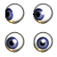
Textura encontrada nos dados do cliente, sem referência encontrada no código do ponteiro.
Data/Interface/CursorEye.ozt
PNG presente em OwnUI. A seleção ativa usa a textura Mega correspondente.
StreamingAssets/OwnUI/cursor/CursorPush.png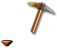
Textura encontrada nos dados do cliente, sem referência encontrada no código do ponteiro.
Data/Interface/Cursor_stuff2_01.OZT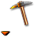
Textura encontrada nos dados do cliente, sem referência encontrada no código do ponteiro.
Data/Interface/Cursor_stuff2_02.OZT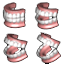
PNG presente em OwnUI. A seleção ativa usa a textura Mega correspondente.
StreamingAssets/OwnUI/cursor/CursorTalk.png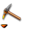
Textura encontrada nos dados do cliente, sem referência encontrada no código do ponteiro.
Data/Interface/Cursor_stuff2_03.OZT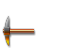
Textura encontrada nos dados do cliente, sem referência encontrada no código do ponteiro.
Data/Interface/Cursor_stuff2_04.OZT